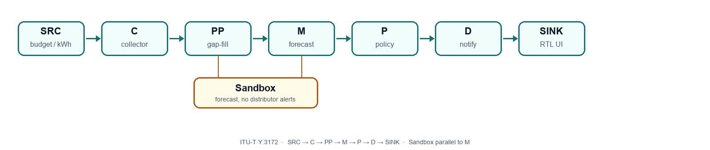

Team Members. Mohammed Nadher Aboalrejal — Mentor — aboalrejal.ai@gmail.com — Technical Lead, System Architect, Technical Report Author. Fatima Alsultan (KFU, Chemical Engineering, 2nd Year) — fatima.alsultan2105@gmail.com — research, ideation, policy gap analysis, report structuring. Shahad Alsultan (KFU, Civil Engineering, 2nd Year) — shahadalsultan2026@outlook.com — video, report drafting. Jorry Alfalah (KFU, Electrical Engineering, 2nd Year) — Jurryraed90@hotmail.com — UI, logo. Noor Alshammari (KFU, Chemical Engineering, 2nd Year) — noornaser.sh1@gmail.com — UI templates, logo.
Cap: ≤5 pages. Demo telemetry is synthetic (hackathon use only); Knowledge Base documents are authentic public sources. This report describes only capabilities present in the repository (demo path + optional Supabase). Limitations are stated explicitly.
Project resources. Live Demo: https://wafier.aboalrejal.com/ · GitHub: https://github.com/aboalrejal-ai/wafier · Demo video: https://www.youtube.com/watch?v=bRYwjbxs9t4
Households in Saudi Arabia often discover electricity overspend only when the monthly bill arrives. Peak summer cooling makes this worse. Wafir is an Arabic RTL personal FinTech app that forecasts end-of-month SAR spend from simulated meter-like kWh plus weather context, compares the forecast to a user budget, and raises graduated alerts.
The pipeline follows ITU-T Y.3172 (SRC → C → PP → M → P → D → SINK, plus Sandbox). Policy grounding uses a verified Knowledge Base of Saudi and ITU public sources (knowledge-base.json, 42 VERIFIED records + 1 ISO benchmark), compiled from three independent deep-research passes in docs/research/. Framework names follow ITU AI Readiness Report 2.0 (kb/framework/dimensions.json).
Honest limit: meter ingest is simulated; the forecast is rule-based seasonal projection, not a trained neural model.
Problem. Families lack proactive, explainable energy-budget control tied to local tariffs and heatwaves. Beneficiaries: Saudi households managing a monthly electricity budget; secondary value for energy/privacy policy readers via the gap matrix.
| Gap in existing tools | How Wafir responds (implemented) |
|---|---|
| Late bill shock | Seasonal forecast vs budget; Level-2 warning if predicted SAR > budget or temperature ≥40°C |
| Opaque advice | RAG over verified chunks with citation URLs; if nothing matches: Arabic INSUFFICIENT_EVIDENCE, no invented law |
| No privacy gate | PDPL consent screen before processing; preprocessor pseudonymizes household id before ML export |
| Ads from consumption | Deterministic policy node blocks targeted_ads_from_consumption (PDPL-ADS-001) |
| No orchestration evidence | Demo path SRC→C→PP→M→P→D with audit log; reproducible via pnpm demo |
Sandbox is a Y.3172 supporting component (parallel validation). MLFO is seasonal-profile switching inside M, not an eighth official node. Y.3172 ↔ Readiness (ITU summary): D5 workflows, D10 policies, D13 infrastructure.

| Node | Role in Wafir | Supporting document |
|---|---|---|
| SRC | Budget 500 SAR, simulated kWh, weather (OpenWeather if key set, else simulated) | SERA residential tariff |
| C | Demo collector / heatwave aggregation (simulateMeterReading). No consumer AMI API — GAP-01 | SEC data sharing |
| PP | Gap-fill missing daily kWh; hash household id (pseudonymization, not full anonymization) | PDPL destruction / pseudonymisation |
| M + MLFO | Rule-based SAR forecast; summer profile at ≥38°C (method reference, not trained weights) | MDPI KSA energy forecasting |
| Sandbox | isSandbox: forecast without distributor alerts | ITU-T Y.3172 |
| P | Budget L1/L1b/L2 + ads guard (no LLM in the decision) | PDPL official text + PDPL-ADS-001 |
| D | In-app + Web/Local notifications (FCM needs keys) | SDAIA AI Ethics (human oversight) |
| SINK | Arabic RTL React UI. SAMA analog; not Open Banking integration | SAMA consumer protection |
Official names: kb/framework/dimensions.json (ITU AI Readiness Report 2.0). PDPL / purpose limitation maps to D10, not D8.
| Factor | Wafir evidence |
|---|---|
| Data | Public Saudi/ITU documents in knowledge-base.json (not private household dumps) |
| Research | Three deep-research passes in docs/research/ (ChatGPT, Gemini, Perplexity), then human merge |
| Deployment Support | Vite SPA on Hostinger; optional Supabase; Capacitor wrapper |
| Standards | Y.3172 node mapping + ITU-T Y.3172 citation |
| Open Source and Code | Public GitHub https://github.com/aboalrejal-ai/wafier |
| Sandbox Environments | isSandbox heatwave path — forecast without pushing alerts |
| ID | Official ITU dimension | Wafir evidence |
|---|---|---|
| D5 | Level of Integration of AI in Workflows | Pipeline audit, graduated alerts, pnpm demo |
| D6 | Human Interface | Arabic RTL UI + AI assistant with citations |
| D7 | Strategy Alignment | KB NSDAI-001 (Vision 2030 / SDAIA NSDAI PDF). Use-case aligned to national strategy; we do not claim to implement NSDAI |
| D8 | Collaboration with AI | HITL: 2-hour alert snooze on Profile; user question shapes RAG |
| D10 | AI & Policies | Six verdicts; SC-03 policy sandbox; GAP-01..06; PDPL consent + purpose limitation |
| D11 | AI for Inclusion | Arabic-first interface; local SERA/KAPSARC context |
| D13 | Digital Infrastructure | Hosted SPA; optional Supabase; simulated meter as Y.3172 SRC stand-in |
Reproducible proof: pnpm demo (or node scripts/run-demo.mjs). Demo data are synthetic.
scenarios/sc-01-compliant-rag.json)Scenario. User asks in the AI Assistant: كيف أوفر في فاتورة الكهرباء؟ Step 1. The household submits a normal saving question. Context is synthetic. Step 2. Wafir retrieves verified KB chunks by keyword matching over curated records (not a live web search). If no chunk matches, the assistant returns لا توجد أدلة كافية… (INSUFFICIENT_EVIDENCE) and invents no URLs. Step 3. For this query the grounded reply gives qualitative saving tips (runtime, efficient AC / SASO 2663, insulation, LED, night-time loads) with citation URLs. Expected verdict: COMPLIANT. Tips are not a guaranteed SAR saving.
scenarios/sc-02-pp-gap-fill.json)Scenario. In a 7-day kWh series, day 4 is missing (kwh: null); other days are 29.67. Step 1. Collector/preprocessor sees an incomplete series (simulated meter gap, not a live AMI outage). Step 2. The missing day is filled from neighbouring values (demo expected fill = 29.67). Household id is pseudonymized for export. Step 3. Forecast and dashboard continue; the audit log records the gap-fill; the app does not crash. Expected: graceful degradation. The filled value is not claimed as a real meter reading.
scenarios/sc-03-ads-controversy.json)Scenario. A dummy provider requests targeted_ads_from_consumption. Step 1. The request arrives as a policy check (About → controversy scenario), not as a live ad SDK. Step 2. Policy node evaluateKbGuardPolicy runs deterministically (no LLM). Step 3. Result VIOLATION / BLOCK_DATA_USE / PDPL-ADS-001. In-app notice: حارس سياسة KB — منع الإعلانات. Audit stores the verdict and the PDPL knowledge-center URL. Step 4 (corrective). Consumption data is not released for ads. This is a Wafir purpose-limitation control. PDPL Art.26 allows consented marketing of non-sensitive data; we do not claim a statutory total advertising ban. HITL snooze remains available on Profile for budget alerts.
Classifications below are from sources we reviewed; they are not a claim that Saudi law is silent in every forum.
| ID | Type | Gap | Recommendation |
|---|---|---|---|
| GAP-01 | potential_gap | No consumer-authorized AMI API | Open-Utility style authorization (like Open Banking) |
| GAP-02 | potential_gap | AI forecast liability allocation | Sector guidance; general civil law may apply (CIVIL-LAW-120) |
| GAP-03 | potential_gap | Energy-sector AI data rules | PDPL + SERA PDP under explicit sector policy |
| GAP-04 | potential_gap | No mandatory energy algorithm-audit standard | Y.3172 sandbox + ISO 42001 as a benchmark (not a certification) |
| GAP-05 | potential_gap | No machine-readable law repository | Government structured-regulation API |
| GAP-06 | ambiguity | Consumption → ads repurposing | Explicit PDPL/sector guidance; Wafir blocks silent reuse |
GAP-01. In the sources we reviewed, we did not find a consumer-authorized AMI API comparable to Open Banking that would let Wafir pull live meter data with user consent. Wafir therefore uses simulated kWh. Recommendation: an Open-Utility style authorization framework.
GAP-02. We did not find sector-specific rules allocating liability when an energy forecast is wrong. General civil-law harmful-act principles may still apply (CIVIL-LAW-120). Recommendation: sector guidance; until then Wafir labels forecasts as estimates.
GAP-03. PDPL and SERA data-protection pages exist, but energy-AI processing (forecasting, sharing, secondary use) is not spelled out as a sector playbook in the sources we checked. Recommendation: PDPL + SERA PDP under explicit sector policy.
GAP-04. We did not find a mandatory energy-sector algorithm-audit standard for household bill models. Recommendation: use the Y.3172 sandbox pattern and ISO/IEC 42001 as a benchmark, not a claimed certification.
GAP-05. Official texts are published as HTML/PDF, not as a queryable regulation API. Wafir therefore curates verified chunks rather than scraping live law. Recommendation: a government structured-regulation API.
GAP-06. PDPL purpose limitation and Art.25–27 constrain marketing, but Art.26 still allows consented marketing of non-sensitive data. Whether electricity-consumption profiles may be reused for ads is not spelled out for this use case. Wafir blocks silent repurposing by policy (SC-03). Recommendation: explicit PDPL/sector guidance on energy-data repurposing.
Full corpus: knowledge-base.json (42 VERIFIED + 1 ISO benchmark). Ten primary citations for judges:
| # | Document | Authority | URL |
|---|---|---|---|
| 1 | PDPL official EN (Art.4–6, 10–15, 25–27) | SDAIA | sdaia.gov.sa PDF |
| 2 | PDPL Art.26 direct marketing | SDAIA | dgp.sdaia.gov.sa PDPL2 |
| 3 | AI Ethics Principles v1.0 | SDAIA | ai-principles-EN.pdf |
| 4 | NSDAI (Vision 2030) | SDAIA | NSDAI.pdf |
| 5 | SERA residential consumption tariff | SERA | sera.gov.sa tariff |
| 6 | SEC data sharing | SEC | se.com.sa Open Data |
| 7 | KBEAT — Building Energy Assessment Tool | KAPSARC | apps.kapsarc.org/kbeat |
| 8 | Financial Consumer Protection Principles (analog) | SAMA | rulebook.sama.gov.sa |
| 9 | ITU-T Y.3172 ML pipeline architecture | ITU | itu.int Y.3172 |
| 10 | ISO/IEC 42001:2023 (benchmark only) | ISO | iso.org 81230 |
| Deliverable | Location |
|---|---|
| GitHub | https://github.com/aboalrejal-ai/wafier |
| Live demo | https://wafier.aboalrejal.com/ |
| Demo video | https://www.youtube.com/watch?v=bRYwjbxs9t4 |
| Knowledge base | knowledge-base.json |
| Scenarios | scenarios/ |
| Reproducible demo | pnpm demo |
Distributor: in-app + Web Notification API + Capacitor Local Notifications.